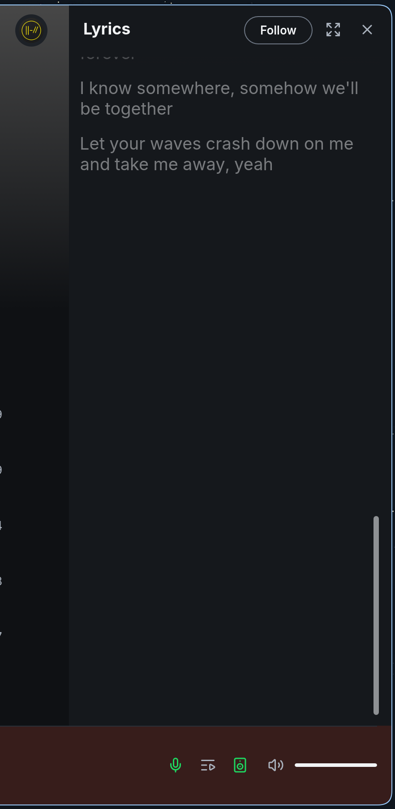
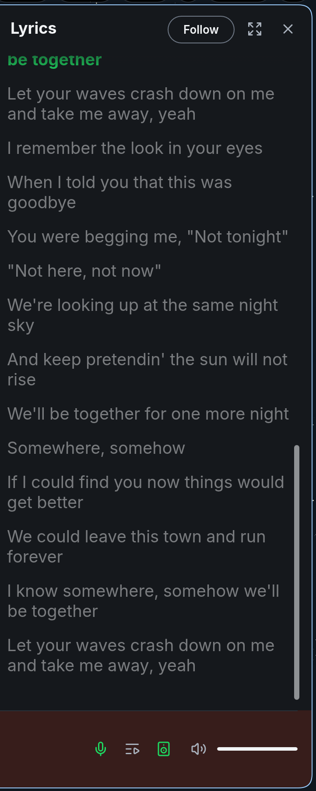

Early in a song (paused at 0:05, not following), the lyrics are scrolled by hand to the very end. Before, the last line ends near the top of an otherwise empty view. After, the last line sits near the bottom with a small margin. Panel and full screen.
Baseline: crmne/spotifast main 7e2d6c5. Candidate: Magniquick/spotifast lyrics-end-padding 68b62fb.
No demo-mode captures: this state needs a live pointer hover or a hand scroll, which demo mode cannot script. The captures below come from the running app with each build.
Real-account captures on Linux (CachyOS, Hyprland), dark theme, normal window.

